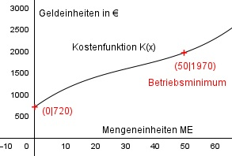

Aufgabe 138 Ein Hersteller berechnet seine Gesamtkosten mit einer ganzrationalen Funktion 3. Grades. Dabei setzt er 720 € Fixkosten an, rechnet mit durchschnittlichen variablen Kosten von 50 € bei einer produzierten Menge von 100 ME, mit Grenzkosten von 48,03 € bei 1 ME und mit gesamten Durchschnittskosten von 70 € bei 20 ME. Bei welcher ME liegt sein Betriebsminimum?  Allgemeine Form einer ganzrationalen Kostenfunktion 3. Grades: K(x) = ax3 + bx2 + cx + d K’(x) = 3ax2 + 2bx + c K’’(x) = 6ax + 2b Kv(x) = ax3 + bx2 + cx 4 Bedingungen: 1. Dabei setzt er 720 € Fixkosten an bedeutet: K(0) = 720 --> a * 03 + b * 02 + c * 0 + d = 720 --> d = 720 2. Rechnet mit durchschnittlichen variablen Kosten von 50 € bei einer produzierten Menge von 100 ME bedeutet: Kv(x) = a * x3 + b * x2 + c * x Kv(x) kv(x) = -------- = a * x2 + b * x + c x kv(100) = 50 --> a * 1002 + b * 100 + c = 50 --> 10000a + 100b + c = 50 I 3. Mit Grenzkosten von 48,03 € bei 1 ME bedeutet: K’(1) = 48,03 --> 3a * 12 + 2b * 1 + c = 48,03 --> 3a + 2b + c = 48,03 II 4. Mit gesamten Durchschnittskosten von 70 € bei 20 ME bedeutet: k(20) = 70 --> a * 203 + b * 202 + c * 20 + 720 = ----------------------------------- = 70 --> 20 a * 202 + b * 20 + c + 36 = 70 |-36 400a + 20b + c = 34 III I + III * (-1) 10000a + 100b + c = 50 -400a - 20b - c = -34 ------------------------ 9600a + 80b = 16 IV II * (-1) + III -3a - 2b - c = -48,03 400a + 20b + c = 34 ----------------------- 397a + 18b = -14,03 V IV * 18 + V * (-80) 172800a + 1440b = 288 -31760a - 1440b = 1122,4 ------------------------- 141040a = 1410,4 |:141040 a = 0,01 a = 0,01 in IV eingesetzt: 9600 * 0,01 + 80b = 16 96 + 80b = 16 |-96 80b = -80 |:80 b = -1 a = 0,01 und b = -1 in III eingesetzt: 400 * 0,01 + 20 * (-1) + c = 34 4 - 20 + c = 34 -16 + c = 34 |+16 c = 50 Gesuchte Kostenfunktion: K(x) = 0,01x3 - x2 + 50x + 720 Für das Betiebsminimum gilt: kv’(x) = 0 Kv(x) kv(x) = --------- = x 0,01x3 - x2 + 50x = ---------------------- = 0,01x2 - x + 50 x kv’(x) = 0,02x - 1 = 0 |+1 0,02x = 1 |:0,02 x = 50 ME kv’’(50) = 0,02 > 0 --> Minimum K(50) = 0,01 * 503 - 502 + 50 * 50 + 720 = 1250 - 2500 + 2500 + 720 = 1970 GE Das Betriebsminimum liegt bei (50|1970)